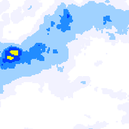

2つの
細かさ
があります
雨雲の絵は細かく、天気の数字は粗いです。
ひと目で
雨雲の絵
1マス
約250m
交差点いくつかぶん
天気の数字
1マス
約5km
区ひとつぶんくらい
同じ画面の中でも、雨雲の絵と気温・降水確率では細かさが20倍ちがいます
23区内で数字は変わるか
変わります。ただし
住所ごと
ではなく
5kmのマスごと
です。
23区内の10か所で試した結果
10か所が入ったマスの数
9つ
（ほぼ別々のマス）
六本木 と 新橋（約2.5km）
同じマス
→ 同じ数字
羽田 と 蒲田（約6km）
別のマス → 別の数字
そのときの気温の差
19.2℃ 〜 19.8℃（区によって0.6℃）
つまり。
同じ区の中で住所をずらしても数字はたいてい同じです。区をまたぐくらい動かすと変わります。
「場所を変えたのに同じ数字だ」と迷わないよう、画面の下にも小さく書いておきました。
雨雲の絵の細かさ（実物）

実際の雨雲データを引き伸ばしたもの。四角い粒ひとつが約250m四方です
地図をどれだけ拡大しても、細かさはここまでです。
これ以上寄せると、同じ粒が大きく引き伸ばされて見えます（新しい情報は増えません）。
まとめ
雨雲の絵
は約250m。街区の単位で分かります。
気温・降水確率
は約5km。だいたい区の単位です。
同じ区の中で住所を変えても、数字はたいてい同じです。
この説明を画面の下にも一言入れました（dev反映済み）。